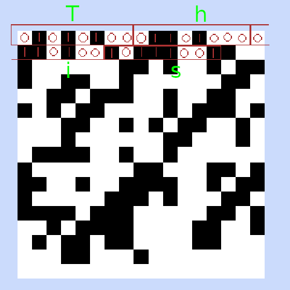

Each letter in the alphabet is 8 bits. Each bit can be either 1 or 0. Each bit's state is visually represented by a pixel having color(1) or being white(0). The pixels can be read sequentially line by line from left to right.
For example the word 'test' is represented in binary form as:
01110100 01100101 01110011 01110100
In the image each '0' would be a background pixel and each '1' would be a foreground pixel.

00100000 space Space
00100001 ! Exclamation mark
00100010 " Double quote
00100011 # Number
00100100 $ Dollar sign
00100101 % Percent
00100110 & Ampersand
00100111 ' Single quote
00101000 ( Left parenthesis
00101001 ) Right parenthesis
00101010 * Asterisk
00101011 + Plus
00101100 , Comma
00101101 - Minus
00101110 . Period
00101111 / Slash
00110000 0 Zero
00110001 1 One
00110010 2 Two
00110011 3 Three
00110100 4 Four
00110101 5 Five
00110110 6 Six
00110111 7 Seven
00111000 8 Eight
00111001 9 Nine
00111010 : Colon
00111011 ; Semicolon
00111100 < Less than
00111101 = Equality sign
00111110 > Greater than
00111111 ? Question mark
01000000 @ At sign
01000001 A Capital A
01000010 B Capital B
01000011 C Capital C
01000100 D Capital D
01000101 E Capital E
01000110 F Capital F
01000111 G Capital G
01001000 H Capital H
01001001 I Capital I
01001010 J Capital J
01001011 K Capital K
01001100 L Capital L
01001101 M Capital M
01001110 N Capital N
01001111 O Capital O
01010000 P Capital P
01010001 Q Capital Q
01010010 R Capital R
01010011 S Capital S
01010100 T Capital T
01010101 U Capital U
01010110 V Capital V
01010111 W Capital W
01011000 X Capital X
01011001 Y Capital Y
01011010 Z Capital Z
01011011 [ Left square bracket
01011100 \ Backslash
01011101 ] Right square bracket
01011110 ^ Caret / circumflex
01011111 _ Underscore
01100000 ` Grave / accent
01100001 a Small a
01100010 b Small b
01100011 c Small c
01100100 d Small d
01100101 e Small e
01100110 f Small f
01100111 g Small g
01101000 h Small h
01101001 i Small i
01101010 j Small j
01101011 k Small k
01101100 l Small l
01101101 m Small m
01101110 n Small n
01101111 o Small o
01110000 p Small p
01110001 q Small q
01110010 r Small r
01110011 s Small s
01110100 t Small t
01110101 u Small u
01110110 v Small v
01110111 w Small w
01111000 x Small x
01111001 y Small y
01111010 z Small z
01111011 { Left curly bracket
01111100 | Vertical bar
01111101 } Right curly bracket
01111110 ~ Tilde